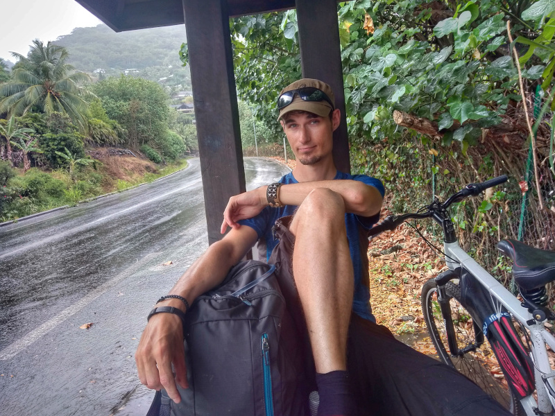
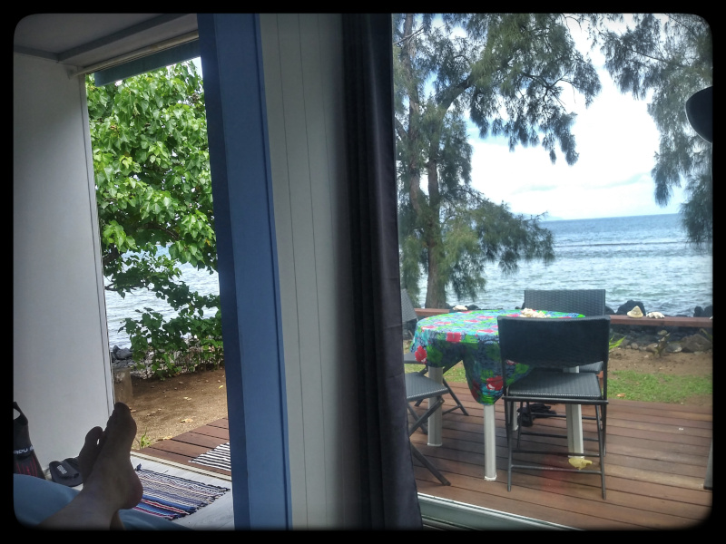

We are travelling around the islands of Polynesia.
Around Moorea in 7 days
Day 1: Putting in the work.
Day 1 was by far the most ambitious day of biking - a total of 33.8kms with heavy packs. We set out in the morning from our base in Puna'Auia to Papeete, 13kms along the country's only busy highway. We managed to run errands in the city and make the ferry we wanted at the last moment. Moorea is incomparably more chill than Tahiti. There's very little traffic, the road is new, the views are incredible, and there are drinking water fountains here and there around the island. It is, truly, the ideal lace for biking. We got cought in the rain very soon after getting off the ferry, so we waited it out under a bus stop roof.
Me: It looks like civilisation is just around the corner.Brett: People have been saying that for hundreds of years.
On the way, we passed Cook Bay, the first of the two bays on Moorea, and one with more tourist infrastructure. It gave us a chance to appreciate the epic mountains towards the middle of the island, and have a proper meal before pressing on to Oponohu Bay, a much less touristy bay we were planning on staying in. I suppose when booking the stay at Tropical Garden Lodge I didn't put the two and two together, that if the views of the bay are as epic as advertised, it means there is quite a climb to get to the place. Yes, the spot was high up. And shlepping our bikes and pack uo there at the end of a tough day was... rough. But hey, we're up. The spot has a rustic backpacker vibe, and awesome dogs. And the views? Yeah, the views are stunning AF.
Day 2: Recovery
It rained all day. Our host Nahini made us pancaces for breakfast. You know that's how you make Canadians happy. When I said that the first day we got some basics from the supermarket? For Brett that means pancake mix and maple syrup. We weren't gonna get our bikes down the hill just to shlepp them up again, so we were limited to things within walking distance. That meant a prawn farm, a university campus with a building looking like a coconut palm-woven basket. We had some trouble finding food (there really isn't much in Oponohu Bay) but we found a tiny store and bought a can of beans and meat. This will end up being our staple emergency meal. Then we were too tired and too antisocial to make it in the communal kitchen so it ended up being breakfast instead.
Day 3: Tiki Village.
We met a French backpacker couple over our breakfast beans in the rain. They were booked in Tropical Garden for a week, hoping to do some hiking and pretty bummed out about the weather. We made it down with our packs and our bikes and started making our way. The plan was a lot less ambitious than day 1 - only about 15kms, getting to the western coast of the island in time for a dinner and spectacle at a traditional theatre called Tiki Village. The rain didn't help, but we took it easy. Once we cleared the bay we hung out on a beach full of crab holes and drifting coconuts, and then made our way further hoping to find a place for lunch. We did so just in time to hide from a true tropical downpour. The place, by complete coincidence, turned out to be a very highly rated restaurant famous for its seafood. We both gou poisson cru (without the cucumber) and it was unbelievable. It set a very high bar for the evening.
Tiki Village certainly knows its audience. It's very clearly meant for wealthy white boomers, so a lot of the exhibition you get to see before dinner is about Marlon Brando and Jaques Brel. And some tasteful photos of topless Tahitan girls. You know, so rich old dudes can think they are just like Marlon Brando. For the rest of us, there were schematics of traditional boats, tips on openning coconuts, and how to drape your pareo so that it's catwalk-worthy. More men's styles than women's, actually. After dinner, the spectacle started. Words won't do it justice so we made you a little supercut super quick.
Day 4: Pizza man knows how to live
Today wasn another calm recovery day, we biked down to the nearest village and had food truck pizza, and grabbed some basic foods and beer at a store. The pizza man was clearly a Frenchman who'd moved here decades ago and is married to a Tahitian and just kinda loving life on Moorea working his pizza stand. Honestly, we keep looking at people who managed to make life here permanent and thinking that, wow, these guys really have it figured out.
As the picture might suggest, we are also getting the hang of how to live.
Day 5: We made so many friends. Most of them had 4 legs.
Today we closed the loop - we have pretty much biked all the way around Moorea by now. It's Sunday, so the only food around is street stands. WHich we had to go easy on, cause we're low on cash and we we didn't know where the nearest ATM might be. As we were almost up to our last accomodation point on Moorea, we met these two sweetest dogs. First we passed them cuddling by the road. One white and short haired and one brown with longer hair. Then we stopped for a breather and to look at the magnificent lagoon, the brow boy came up to us cautiously. We made friends so he went and brought the white one, a girl, with a leg that seemed to had been broken and sealed badly. Pets and cuddles followed, and we shared our granola bars. We soon arrived at the home of Lawrence - our host for the next 2 nights. Once again, a lady who has it figured out. She has a house perched on the coast of the Lagoonarium - a Moorea bay with an astounding amount of marine life. Like, it's pretty crowded in there. So she put up two hi-tech bungalow pods in the garden, solar panels and all and she rents them out. It was pretty fantastic.

Day 6: Snorkeling in the Lagoonarium

[EPIC SNORKELING FOOTAGE STILL TO COME]
Day 7: Returns are easy
Well, we biked back today and it was a breeze. To celebrate getting back to Tahiti we went to Bora Bora lounga and had their signature "Tuna Trilogy" dish - Possion Cru, Ahi Tuna and one more raw tuna dish and it was just.... unbelievably amazing. Then we spent a little time in town to sober up. and easily biked back to Puna'Auia. We're definitely in better and better shape.